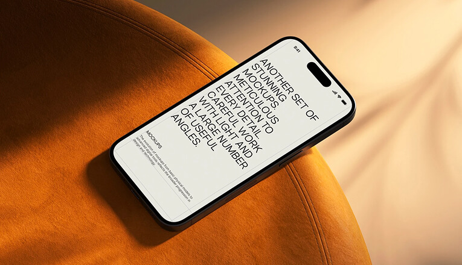

IT support
& hardware
Maintenance, troubleshooting, printer support, documentation, and the calm response people need when technology fails.
NAIROBI, KENYA / AVAILABLE FOR IMPACTFUL WORK
I'm Michael Kifumbu Mshila, an ICT graduate and IT professional helping people and organizations work with secure networks, resilient systems, and practical technology.
I'm an ICT graduate with hands-on experience in hardware maintenance, network management, IT support, CCTV installation, and cybersecurity.
My work is grounded in practical problem-solving — keeping infrastructure useful, people supported, and systems secure enough to trust.
Let's build something dependable →Maintenance, troubleshooting, printer support, documentation, and the calm response people need when technology fails.
Network management and infrastructure support designed for clear communication, dependable uptime, and room to grow.
CCTV installation, security-minded systems thinking, risk awareness, and a growing focus on ethical hacking and incident response.
Microsoft Office, technical coordination, teamwork, leadership, and the details that turn a plan into a working environment.
Experience across hospital network infrastructure, surveillance systems, computer hardware, printers, and day-to-day technical support.

Supporting the systems behind people doing important work.

Practical surveillance and risk-aware installation.
Reliable help, clear documentation, better outcomes.
Let's talk about the infrastructure, support, or security challenge in front of you.
techubinfo@mail.com ↗